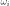
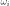

WeightedExperiment¶
- class WeightedExperiment(*args)¶
Weighted experiment.
- Available constructor:
WeightedExperiment(distribution=ot.Uniform(), size=100)
- Parameters
- distribution
Distribution Distribution
 used to generate the set of input data.
used to generate the set of input data.- sizepositive int
Number
 of points that will be generated in the experiment.
of points that will be generated in the experiment.
- distribution
Notes
WeightedExperiment is used to generate the points
 so that the
mean is approximated as follows:
so that the
mean is approximated as follows:where
is a distribution,  is a function
and  are the weights associated with the points. By default,
all the weights are equal to
is a function
and  are the weights associated with the points. By default,
all the weights are equal to  .
.A WeightedExperiment object can be created only through its derived classes which are distributed in three groups:
The first category is made up of the random patterns, where the set of input data is generated from the joint distribution of the input random vector, according to these sampling techniques:
The second category contains the
low discrepancy sequences. OpenTURNS proposes the Faure, Halton, Haselgrove, Reverse Halton and Sobol sequences.The third category consists of deterministic patterns:
Methods
generate()Generate points according to the type of the experiment.
Generate points and their associated weight according to the type of the experiment.
Accessor to the object's name.
Accessor to the distribution.
getId()Accessor to the object's id.
Accessor to the underlying implementation.
getName()Accessor to the object's name.
getSize()Accessor to the size of the generated sample.
Ask whether the experiment has uniform weights.
setDistribution(distribution)Accessor to the distribution.
setName(name)Accessor to the object's name.
setSize(size)Accessor to the size of the generated sample.
- __init__(*args)¶
- generate()¶
Generate points according to the type of the experiment.
- Returns
- sample
Sample Points
 which constitute the design of experiments
with
which constitute the design of experiments
with  . The sampling method is defined by the nature of
the weighted experiment.
. The sampling method is defined by the nature of
the weighted experiment.
- sample
Examples
>>> import openturns as ot >>> ot.RandomGenerator.SetSeed(0) >>> myExperiment = ot.MonteCarloExperiment(ot.Normal(2), 5) >>> sample = myExperiment.generate() >>> print(sample) [ X0 X1 ] 0 : [ 0.608202 -1.26617 ] 1 : [ -0.438266 1.20548 ] 2 : [ -2.18139 0.350042 ] 3 : [ -0.355007 1.43725 ] 4 : [ 0.810668 0.793156 ]
- generateWithWeights()¶
Generate points and their associated weight according to the type of the experiment.
- Returns
Examples
>>> import openturns as ot >>> ot.RandomGenerator.SetSeed(0) >>> myExperiment = ot.MonteCarloExperiment(ot.Normal(2), 5) >>> sample, weights = myExperiment.generateWithWeights() >>> print(sample) [ X0 X1 ] 0 : [ 0.608202 -1.26617 ] 1 : [ -0.438266 1.20548 ] 2 : [ -2.18139 0.350042 ] 3 : [ -0.355007 1.43725 ] 4 : [ 0.810668 0.793156 ] >>> print(weights) [0.2,0.2,0.2,0.2,0.2]
- getClassName()¶
Accessor to the object’s name.
- Returns
- class_namestr
The object class name (object.__class__.__name__).
- getDistribution()¶
Accessor to the distribution.
- Returns
- distribution
Distribution Distribution used to generate the set of input data.
- distribution
- getId()¶
Accessor to the object’s id.
- Returns
- idint
Internal unique identifier.
- getImplementation()¶
Accessor to the underlying implementation.
- Returns
- implImplementation
A copy of the underlying implementation object.
- getName()¶
Accessor to the object’s name.
- Returns
- namestr
The name of the object.
- getSize()¶
Accessor to the size of the generated sample.
- Returns
- sizepositive int
Number
of points constituting the design of experiments.
- hasUniformWeights()¶
Ask whether the experiment has uniform weights.
- Returns
- hasUniformWeightsbool
Whether the experiment has uniform weights.
- setDistribution(distribution)¶
Accessor to the distribution.
- Parameters
- distribution
Distribution Distribution used to generate the set of input data.
- distribution
- setName(name)¶
Accessor to the object’s name.
- Parameters
- namestr
The name of the object.
- setSize(size)¶
Accessor to the size of the generated sample.
- Parameters
- sizepositive int
Number
of points constituting the design of experiments.